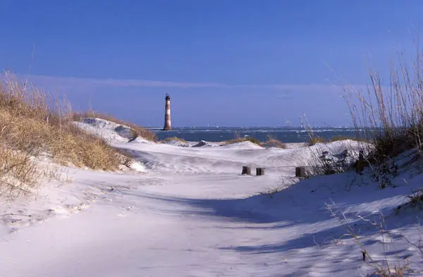

Stop Saying Silicon Harbor
Info
| Summary | Charleston, SC techpreneurs need to stop saying Silicon Harbor. |
|---|---|
| Shared | 2015-03-23 |
| Revised | 2023-02-12 @ 18:00 UTC |
Ever since Nate DaPore allegedly coined the phrase “Silicon Harbor” for Charleston, South Carolina (even though other cities around the world already used this term, such as Hamburg, Germany), folks wanting to look like they know what they’re talking about have continued to use the phrase “Silicon Harbor” adnauseam. If Charleston tech companies would like to move forward and be taken seriously by other cities and players in this game, they need to stop emulating and start innovating. This begins with a proper name.

“Silicon Valley,” the name that was copied and applied to Charleston as “Silicon Harbor,” got its nickname from the concentration of companies who specialized in making semiconductors and other computer-related products in the southern part of the San Francisco Bay Area. Silicon, which itself is a metalloid that is the most common element on our planet besides oxygen, is not unique to the Bay Area. It is in that location that an entire economy and culture grew around the semiconductor and then microprocessor and then software industries. Charleston, however, has no such story to support calling itself “Silicon X.” Here is a list of locations that have also called themselves “Silicon X” in the hopes of getting the scraps from Silicon Valley:
- “Silicon Beach” - Bournemouth, England
- “Silicon Docks” - Dublin, Ireland
- “Silicon Harbor” - Hamburg, Germany
- “Silicon Lagoon” - Lagos, Nigeria
- “Silicon Peninsula” - Dailiar, China
- “Silicon Savannah” - Nairobi, Kenya
…and many more from the List of Places with “Silicon” Names.
While this might all sound quite negative, it is necessary in order to break folks out of their “Silicon Harbor” daydreaming and recognize that riding the coattails of successful communities is not always the path to creating one. A community should be able to stand on its own merits, be unique in the world and at least strive to be its own unicorn-like entity.
Charleston has an impressive number of technology and creative companies, as BoomTown’s useful map compilation shows, given the size of the city. Ask most anyone in the developed world what San Francisco means to them and the answer will include “Silicon Valley,” “technology companies” and “innovation.” Ask the same about Charleston and the answer will include “beautiful architecture,” “great food,” “Southern Hospitality” and maybe “Boeing.” Nowhere outside of South Carolina will you hear people speak of Charleston’s technology scene.
Why is this? Is it a lack of employment opportunities offered by companies in the area? Somewhat. Is it a lack of marketing? Partially. Is it a lack of novelty and significance in global consumers’ lives? Definitely.
If Charleston is not going to be cranking out Apple/Google/???-ambitious tech, then it needs to learn to compete on other fronts. Human resource software, real estate software, healthcare software and assistive financial software are all important industries and employ a great number of people in the Charleston area. They also benefit their community and all give back in innumerable ways. However, there have yet to be any ground-breaking technologies to come out of Charleston since Automated Trading Desk, formerly led by Steve Swanson, busted on to the scene in the late 80s through the late 2000s with its utilization of high-frequency trading, a technology that revolutionized the stock trading industry. If Charleston dares to be great, then it should lead by example.
Personally, I am not as successful as the current folks Mayor Joe Riley courts and supports as drivers of community growth. I have nothing to show. But what I do have is an outside view of the community while still maintaining my membership of it and participation in it. What I see is a city that has many of the traits of a progressive city on the rise but which constantly compares itself to others instead of charging forward as a leader.
It is in this light that I suggest Charleston abandon the overused and cliché “Silicon X” tag and adopt a new nickname (sorry to all you organizations who have named yourself “Silicon Harbor X”). Nobody uses it outside of the Charleston tech community, and nobody will (just as you don’t call Baltimore, MD the “Digital Harbor”). It’s time to move on.
This new nickname should represent the vast presence of technology companies as well as evoke all the right emotions for emphasizing that Charleston is a fantastic place to work, live and raise a family. But it should, above all else, represent the location and culture, itself, without having to rely on an overused, 60-year old term from the other side of the country.